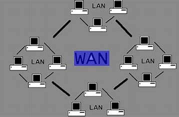
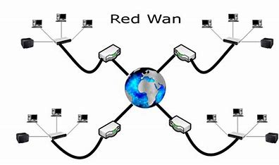

¿Que es la red wan
25 de febrero 2024 Maykel Caballero son una de las tecnologías de comunicación más interesantes y útiles de la era digital. Como su nombre lo indica, estas redes permiten la conexión y transferencia de datos entre dispositivos cercanos, como smartphones, tabletas, portátiles, ect.
Una red de área amplia (WAN) es la tecnología que conecta entre sí a las oficinas, los centros de datos, las aplicaciones en la nube y el almacenamiento en la nube. Se denomina red de área amplia porque se extiende más allá de un solo edificio o un gran recinto para incluir múltiples ubicaciones repartidas a lo largo de una zona geográfica concreta, o incluso del mundo. Por ejemplo, las empresas con muchas sucursales internacionales utilizan una WAN para conectar las redes de las oficinas entre sí. La WAN más grande del mundo es Internet puesto que se trata de un conjunto de muchas redes internacionales que se conectan entre sí. Este artículo se centra en las WAN empresariales y en sus usos y ventajas.
¿Cómo funcionán la red wan?
Las empresas disponen de recursos que se ejecutan en diferentes centros de datos locales, sucursales y nubes virtuales privadas (VPC). Para establecer la conexión entre estos recursos, las empresas utilizan múltiples conexiones de red y servicios de Internet. Dado que las empresas no pueden construir su propia infraestructura de red a través de múltiples fronteras geográficas, suelen alquilarla a un proveedor de servicios externo.
La red de área amplia definida por software (SD-WAN) es la evolución posterior de la tecnología MPLS. Abstrae las funciones del MPLS a una capa de software. Dado que la WAN definida por software funciona a través de conexiones de Internet de banda ancha de uso común, normalmente puede reducir los costos de la red y proporcionar una mayor flexibilidad que una conexión fija.
Ventajas de la red wan
Comunicarse mediante voz y video. Compartir los recursos entre los empleados y los clientes. Acceder al almacenamiento de datos y realizar copias de seguridad remotas. Conectar con las aplicaciones que se ejecutan en la nube. Brinda mayor seguridad al tener un control de acceso en tiempo real. Proporciona una administración simplificada. Da prioridad en conexiones a aplicaciones críticas, respecto a las no críticas. Presenta la posibilidad de establecer el servicio sin necesidad de cambiar las redes existentes.